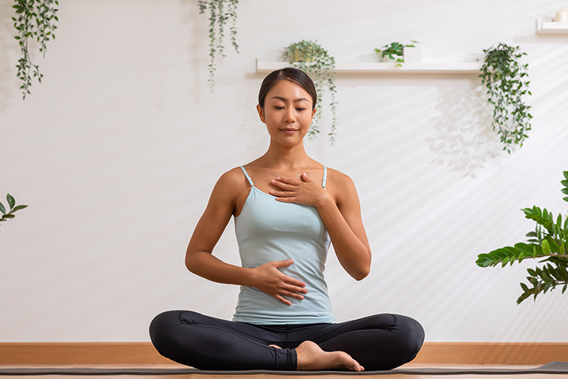
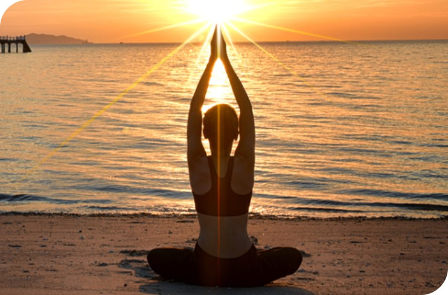
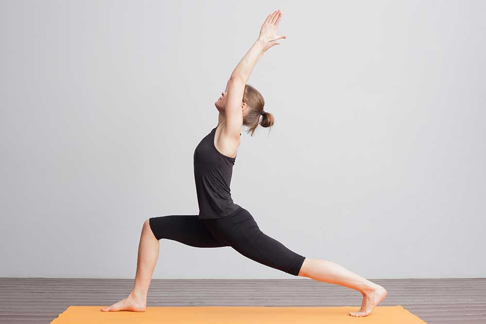
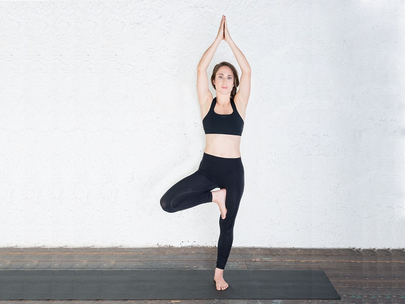

Instructions
-
Deep Breathing
Begin by sitting comfortably with your spine straight. Close your eyes and take deep breaths, inhaling through your nose and exhaling through your mouth. Repeat for 3-5 minutes.
 -
Sun Salutations (Surya Namaskar)
Stand at the top of your mat, inhale and raise your arms overhead. Exhale and fold forward, bringing your hands to the floor. Inhale, lift your chest, and look forward. Exhale, step back into plank pose, and lower down into chaturanga. Inhale, lift into upward-facing dog. Exhale, lift your hips into downward-facing dog. Repeat for 3-5 rounds.
 -
Warrior Poses
From downward-facing dog, step your right foot forward between your hands. Rotate your left heel down and reach your arms up overhead into warrior I. Open your hips and arms to the sides, extending into warrior II. Repeat on the other side.
 -
Tree Pose (Vrikshasana)
Stand tall, shift your weight onto your left foot, and place your right foot on the inner left thigh or calf. Bring your palms together at your heart center or extend your arms overhead. Hold for several breaths, then switch sides.
